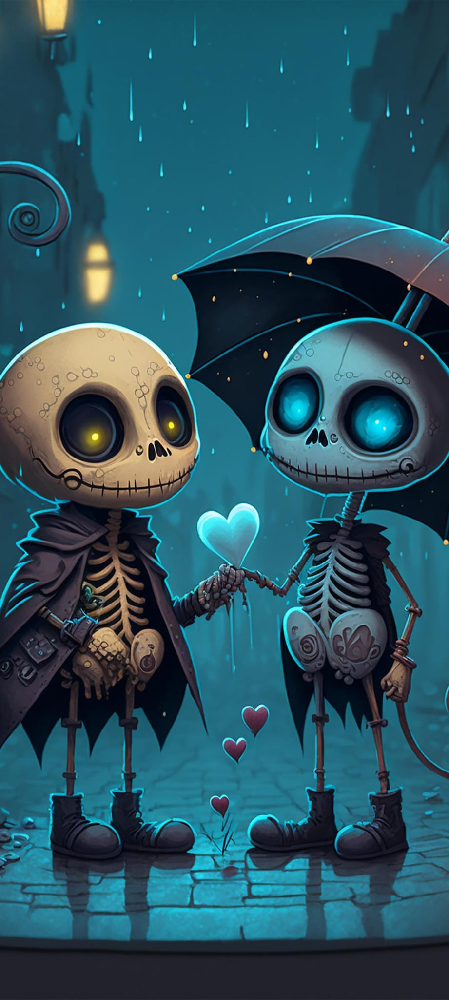

Biricik Karıma,
Bizim küçük
sonsuzluğumuz
✦
Bazı hikâyeler bir tarihle başlar; sonra her gün yeniden yazılır.
Seni görmediğim günden beri…
sayfanın köşesini çevir →Hatıralar özenle yerleştiriliyor…
Baskı yazıcıdan çıkıyor.
birlikte yaşayıp yaşlandığımız
08 • 02 • 2023
Unutulmaz Tarih
Biricik Karıma,
Bazı hikâyeler bir tarihle başlar; sonra her gün yeniden yazılır.
Seni görmediğim günden beri…
sayfanın köşesini çevir →02
zamanın en güzel hâli
Birbirimize olan sevgini arttığı süre
ve saat hâlâ kalbimizden yana işliyor. ♡
Bu fotoğrafı seçmek
2 saat sürdü. 😂
03
biriken güzel anlar
Üzerlerine gel; anılar netleşsin.Anıları görmek için fotoğraflara dokun.
04
unutmak istemediklerim

Bizi benzettiğim fotoğrafBazı şeylerin altı kalemle değil, kalple çizilir.
05
geleceğe mühürlendi
Mühür, doğru zamanı bekliyor.
06
bu sayfa hep burada kalsın
“Yıllar sonra bu defteri yeniden açtığımızda,
bugün birbirimize baktığımız gibi gülümseyelim.”
Senin İçin Tasarlandı Sana Özel 😉
07
son hatıra
Bazı sırlar ve satırlar keşfedilmeyi bekliyor.